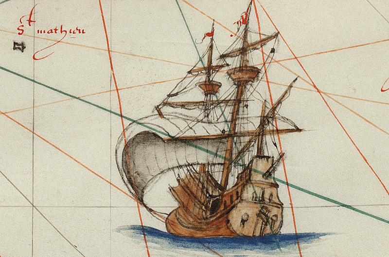
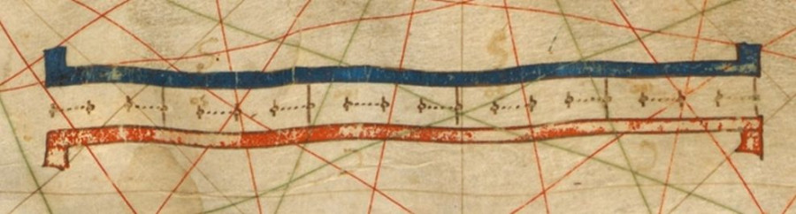
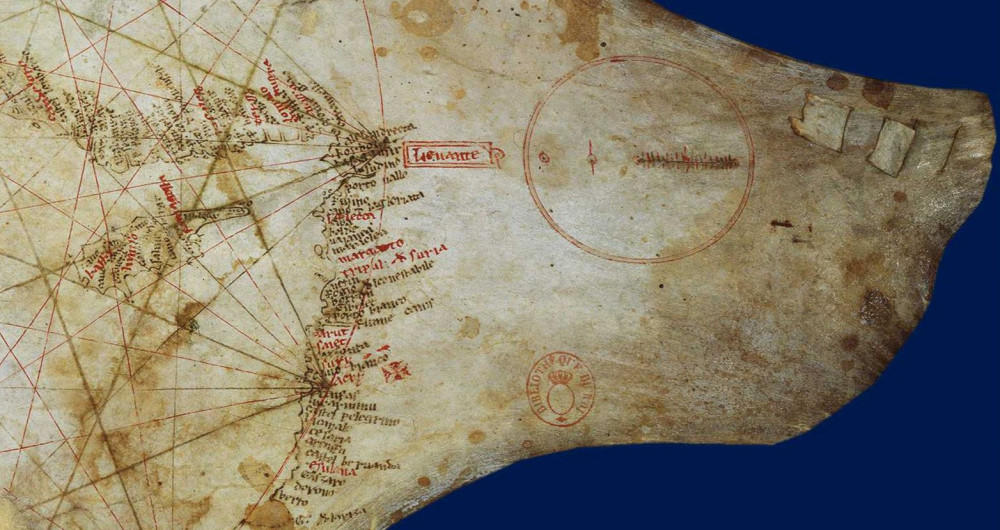
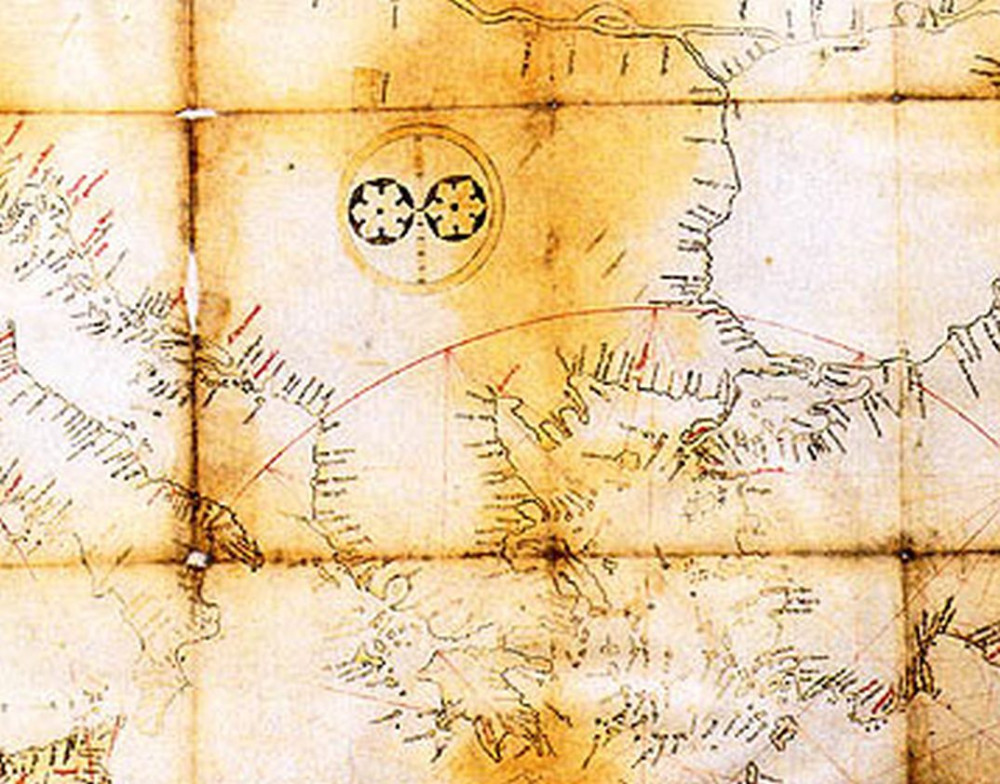
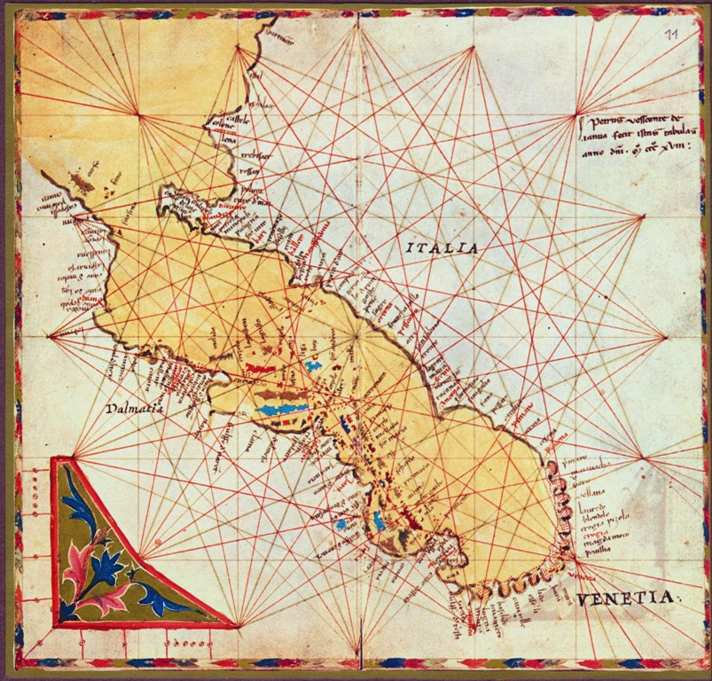
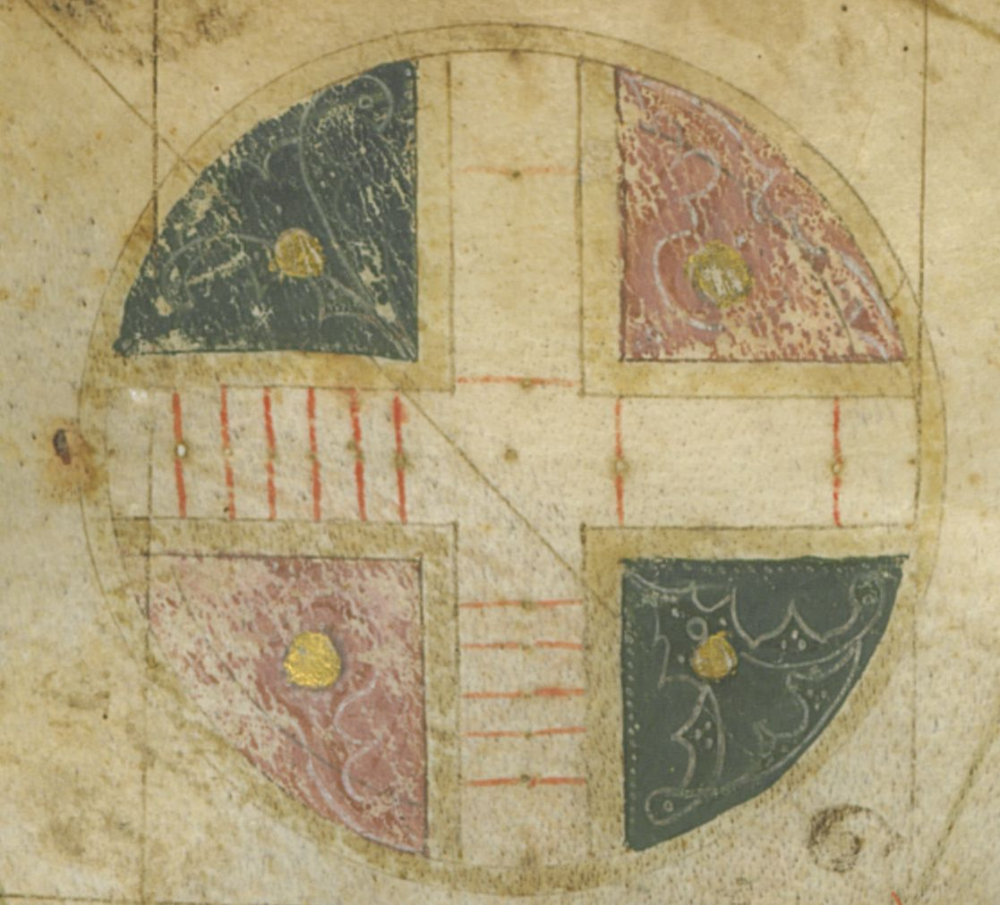
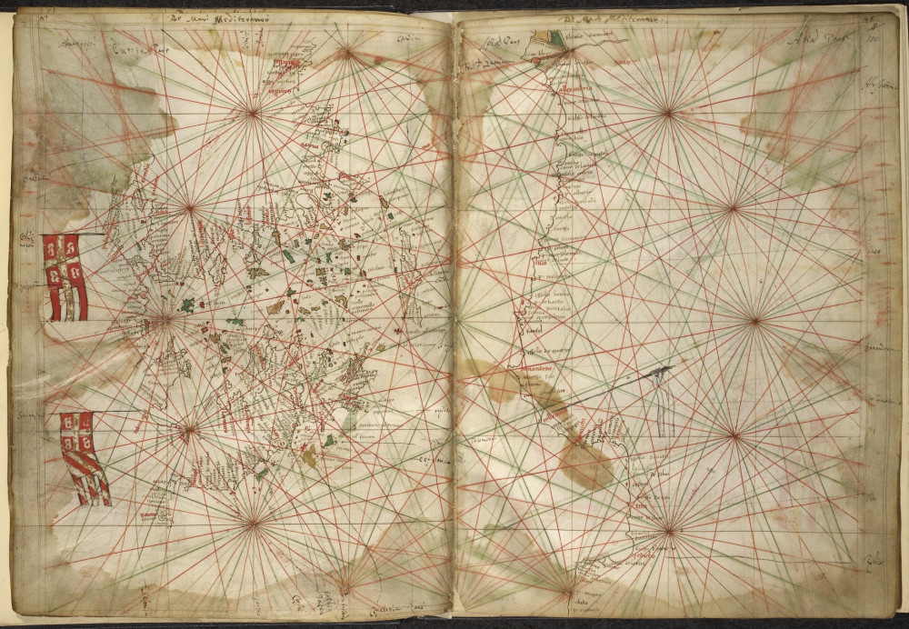

Линейные масштабы на портолан-картах
А пусть товарищ Ленин
проверит нас. А вдруг ― не тот масштаб?
Вдруг размахнулись робко?
О. Ф. Берггольц. «Ночь. Петроград. Над Невскою заставой...»
На протяжении пяти веков простенький сам по себе метод представления сферической Земли на плоскости портолан-карт с постоянным масштабом верой и правдой служил мореходам и сыграл значительную роль в великих географических открытиях европейцев и их экспансии по всем азимутам. До появления в 1569 году карт меркаторской проекции портолан-карты были основным графическим пособием моряков. Но и после этого почти двести лет они имели широкое хождение. И лишь когда был изобретен морской хронометр и развиты методы определения долготы в море портолан-карты отошли в историю и был совершен окончательный переход к морской навигации, основанной на географических координатах. Краткий по историческим меркам промежуточный этап, начавшийся сразу после внедрения в практику элементарных методов мореходной астрономии и нанесения на портолан-карты масштаба широты, ознаменовался появлением так называемых «плоских» или «широтных» карт. Этот этап заслуживает отдельного разговора и мы постараемся обратиться к нему в будущем.

Вся информация, которой владел штурман в эпоху расцвета портолан-карт – это курс и дистанция: курс от места выхода корабля к конечному порту и накопленные в результате длительного опыта мореходов значения расстояний между этими пунктами. Конечно, свои коррективы вносило магнитное склонение, но, к счастью мореходов, хотя у них пока не было возможности сравнить направление на север по магнитному компасу с направлением по звездам, как раз на том историческом отрезке величиной магнитного склонения в Средиземноморье можно было пренебречь без опасных последствий для навигации.
После этого небольшого отступления вернемся к обещанному в прошлый раз продолжению вопроса о масштабе портолан-карт. Здесь нас ждет очередной сюрприз, причем не разрешенный до сих пор. Еще в конце XIX века картографы заметили, что масштабы отдельных бассейнов на портолан-картах не совпадают, а отличаются друг от друга, причем иногда значительно. Так, акватории в районе Валенсийского залива, омывающего восточные берега Испании, или в районе островов Сардиния и Сицилия, были явно меньшего размера, по сравнению с тем, который диктовался масштабом остальной части Средиземного моря. Заметную разницу в масштабах можно обнаружить между акваториями Средиземного моря, Черного моря и Атлантического океана.
Из этих и многих других примеров можно сделать вывод, что портолан-карта была составлена из копий разных по масштабу карт. С другой стороны, можно предположить, что картограф, пытаясь поместить на ограниченном пространстве пергамента помимо Средиземного моря еще и Черное море, и побережье Атлантики, вынужден бы уменьшать размеры новых дополнительных акваторий.
Прежде чем рассказать о том, в каком виде масштабы наносились на карты, скажем, как обычно, несколько слов о принятых единицах измерения. Для портолан-карт использовали единицу, которую называли mia (или miglia, или milliaria). Эта единица длины известна нам только по портоланам и портолан-картам, в других документах она не встречается. Ее величина не была объектом контроля ни со стороны правительства, ни со стороны военной администрации, так как не использовалась в сухопутных измерениях и не прилагалась к исчислению налогов и пошлин. Некоторые авторы полагали, что она равнялась древнеримской миле.
Но была ли Римская миля в Средние века той же, что и во времена Древнего Рима? До нас дошли различные значения мили на разных территориях бывшей империи. Из литературы нам известно, что во времена императоров Римская миля равнялась 1000 Passum («двойных шагов») или 5000 Pedes (футов). Однако до сих пор не найдены эталоны этих мер длины.
Полезно отметить, что в милях расстояния измеряли в римской армии и при строительстве дорог. Моряки обычно использовали стадий (ок. 185 м, почти как современный кабельтов).
В результате различных ухищрений договорились считать одну Римскую милю равной 1,47911 км, или приблизительно 1480 м. Некоторые авторы называют ее итальянской милей.
С появлением иберийской картографической школы (примерно в 1435 году) итальянская миля уступила место кастильской лиге, равной четырем милям.
Практически все портолан-карты снабжались масштабом в виде отрезка ленты (напоминающей по внешнему виду портновский сантиметр или орденскую ленту, у кого какие предпочтения), разделенной на прямоугольные отрезки, которые португальцы называли tronco (‘секция’). У англичан это слово приняло форму «log». Каждую такую секцию делили на пять частей.

Масштаб на портолан-карте Педро Рейнеля (ок. 1504 г.). Длина одной секции представляет длину на местности в 12,5 лиг, расстояние между точками – 2,5 лиги.
Существовало две традиции. Согласно первой, длина одной секции составляла 12,5 лиг, т.е. одно маленькое деление равнялось 2,5 лиги. Вторая традиция возникла в шестнадцатом веке, когда на одну секцию приходилось 10 лиг, но эта новая традиция не получила широкого распространения и общим (для старых карт) оставался стандарт, предусматривающий 12,5 лиг (50 миль) на секцию, или 2,5 лиги (10 миль) на одно деление. Из этого стандарта выбивается лишь первая карта-портолан (Пизанская карта), на масштабе которой меньшее деление соответствовало 5 милям (mia).
На первых портолан-картах вид масштаба отличался от принятых позже стандартов. Так, на Пизанской карте он имел в вид «лесенки», заключенной в окружность.

Похожий вид масштаб имел и на второй по времени карте – карте из Кортоны (1300), обнаруженной в 1957 году

Портолан-карта из Кортоны. Ориент.1300 г. Biblioteca dell'Accademia Etrusca di Cortona, Италия
Но уже в 1318 году Весконте впервые вывел масштаб из круга и изобразил его в виде буквы L, разделенной на секции и помещенной в угловом поле карты.

До этого Весконте использовал масштаб в виде креста внутри круга, напоминающий масштаб Пизанской карты.

Последние карты Весконте, начиная с 1320 года, имели масшабную ленту на полях карты.

Карта-портолан венецианского картографа Весконте (Pietro Vesconte) из двух листов (1327) с изображением Восточного Средиземноморья, включая Крит (в центре). Показаны флаги Салоников и Константинополя. Линейный масштаб на правом и левом полях. British Library, Additional 27376 ff. 183v-184
Еще очень много важного можно сказать о масштабах на портолан-картах. Мы постараемся хотя бы частично поделиться этой интересной информацией в последующих постах, сейчас же завершим эту тему.